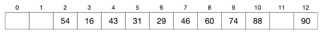

4.3.2. 冲突处理：冲突探测法¶
要实现一个能解决哈希冲突，并能尽可能充分地利用起底层数组空间的哈希表并不是一件容易的事情，有许多相互纠缠项目矛盾的因素需要权衡。
最重要的是要有一个合适的方法来处理冲突，当要新增进表中的数据项和表中某个已有数据项发生哈希冲突的时候，我们要有方法让这个新数据项仍然能被填进表中，并且在今后仍然能在表中被找到，这就是所谓的冲突处理技术。利用冲突处理技术，我们可以让哈希表的装填因子增大，可以尽量多地存放数据。但是随着装填因子的不断增大，冲突率也一定会随之增大，会发生越来越多的冲突。而此时表中实际上存在哈希冲突的数据项也就会越来越多，一定会耗费更多的时间以处理冲突，从而导致运行效率的下降。
经过不断地实践探索，现在已经有许多实用的冲突处理技术，其中最为简单和常用的有两种：冲突探测法和链式哈希表。
4.3.2.1. 冲突探测法¶
冲突探测法又叫开放地址法，它有很多种不同的探测方法，我们只介绍其中最简单的线性探测法。线性探测是所有冲突探测方法的基础，虽然简单，但是很实用，其他复杂的地址探测方法都只是对它的优化改进而已。考虑到算法问题很少需要自己动手实现一个几近完美的哈希表，所以现阶段我们只学习线性探测法就够了。
所有冲突探测法的处理思路都是当冲突发生时，我们按照某种确定的探测方法在底层数组中再探测一个可用位置以放置新数据项。而线性探测法是简单地向后逐个寻找空位，找到第一个可用的空位置即可，如果找到底层数组的最后一个位置还是没有空位，就再从头开始向后找。显然，只要填充因子还没有到100%，就一定能找到一个空位置。
为一个数据项探测位置的次数称为该数据项的探测次数，如果新数据项填入表中时没有发生哈希冲突，那么它的探测次数为一，即通过哈希函数的一次计算就得到了位置。如果发生哈希冲突，那么前后总共探测了几个位置（含计算哈希函数那一次）它的探测次数就是几。
例如，我们的哈希函数为除13取模：\(Hash(k)=k % 13\)，其中 \(k\) 为键值，是正整数。底层数组的长度为13。现在依次向表中填入键值为16,74,60,43,54,90,46,31,29,88,77的11个数据项，从16开始到31为止都没有发生哈希冲突，数据项都以其键值除以13得到的余数为下标存放在表中，如下图：

到目前为止填入表中的8个数据项的探测次数都是1。接下来要填入键值为29的一个新数据项，计算得到哈希值为3，和现有的键值为16的数据项发生哈希冲突。按照线性探测法，我们从这个位置(3)开始逐个向后寻找第一个空位，发现位置(4)和(5)都已经填入了数据项，位置(6)是第一个找到的空位，探测结束，把键为29的新数据项填入其中。这个过程总共探测了从(3)到(6)的四个位置，所以探测次数为4。结果如下图：
可以看出，今后如果要在表中按键值29查找或删除数据项，同样要从哈希值所指示的位置(3)开始向后探测，前后总共探测4次抵达位置(6)就能访问到这个数据项。
接着我们再插入键值为88的数据项，哈希值为10，没有冲突，一次探测完成插入，如下图所示：
最后插入键值为77的数据项，哈希值为12，和已有的键值为90的数据项发生冲突。向后探测已经抵达哈希表底层数组的末尾，按照线性探测规则绕回头部探测，发现位置(0)为空。所以经过2次探测，我们找到了可以存放的空位，如下图所示：
最终11个元素全部插入进总长度为13的哈希表中，空间几乎用满。而其中有两个数据项是发生了哈希冲突的，分别用4次探测和2次探测找到了新位置，今后在访问它们的时候也同样会经历完全一样的4次探测和2次探测。
由此可见，线性冲突法解决哈希冲突可用于较好地实现一个实用的哈希表。但是也应该看到，随着装填因子的增大，发生冲突时的探测次数也会上升。如果装填因子达到100%，很可能出现探测次数接近于哈希表长度的情况。冲突处理的结果是导致那些发生冲突的数据项的增删查效率下降，数据访问的平均时间复杂度不再严格是哈希表承诺的 \(O(1)\)，极端情况可能会接近甚至达到 \(O(n)\)。
因此实现这样的哈希表时，必须对装填因子设置上限。上限设为多少是很难从理论上给出预计的，不断实践测试的结果表明，通常0.7到0.8之间是一个比较合适的区间，超过0.8就会比较明显地引起性能下降。
下面我们将学习一个采用线性冲突探测的哈希表的具体实现例子。事实上这里面涉及的技术问题还是不少的。
键与值的选择
理论上来讲，哈希表是用来存放键值对类型的数据项的。这样的数据项分为两个部分，键和值。键是用来计算哈希值确定存储位置的部分，所有数据项的键必须互不相同而且不能更改。值是数据项真正的数据部分，是可以重复也可以修改的。例如每一位中国公民的身份证号码和姓名就可以构成一个键值对数据项，其中身份证号码可以用做键，因为身份证的规则保证了没有两个不同的人有相同的身份证号码而且同一个人的身份证号码终身不变，死后作废不会重复利用。而姓名相同却是很常见的情况，而且国家允许公民改名。
所以一般来说存放进哈希表的数据就是这样的键值对，通常在用C++语言实现时会构造成结构类型，例如：
struct Person {
string id; // 身份证号码
string name; // 姓名
};
这种形式的数据项，一旦存放入哈希表中，可以通过键值查找到它并且允许修改其作为值的部分，但是键是不允许修改的。
但是如果我们能确保所有数据项本身都不会两两相同，而且没有修改数据的需要的话，当然也可以把整个数据项键值合一，键就是值，值就是键。尤其是数据本身并不复杂的情况下，键值合一可以大大简化程序代码。例如我们的数据项仅仅是身份证号码，那么我们就干脆把数据项本身既作为键又作为值就好。但是要注意，这种情况下就不允许修改表中的数据项了，因为数据项一变，对应的哈希值也就变了，存储位置也会发生变化。如果非要把A改成B，那就先删除A，再插入B。
接下来我们用做例子的哈希表，就采用键值合一的方式，数据项就是一个 int 型的整数，不允许出现重复，不允许修改表中数据的值。如果愣是往表中添加一个已经有了的整数，那就什么也不做，探测次数规定为零。
存放数据还是数据的指针
从上一节的最简单的哈希表原理我们已经知道，哈希表中的数据实际上是存放在一个底层数组中的。当时我们存放的是正整数，底层数组就用了一个 int 型数组，数据直接存放在数组元素中，元素值为0就表示这个位置是空的。但这是一种特殊的简化版方式，实际的哈希表底层数组不能这样直接存放数据，而是应该用指针数据来存放指向数据项的指针。
例如我们将要实现的例子中，数据项为 int 类型的整数，那么我们就需要用一个 int * 类型的指针数组来做底层数组，每一个数组元素都是一个 int 型指针，而不是 int 型变量，例如：
int *_dp[1003];
于是当要增删元素时，我们需要用到动态内存分配，例如：
// 插入元素1004，哈希值为1
_dp[1] = new int;
*_dp[1] = 1004;
// 删除元素1004
delete _dp[1];
_dp[1] = NULL;
为什么要这么麻烦呢？为什么上一节的简单哈希表就能直接往里填数据呢？这是因为底层数组的每一个元素都需要能够分辨它是空的还是满的。在上一节的简单例子中我们的数据是正整数，即不会有负数也不会有零，所以我们可以用特殊值零来表示元素位置上是不是空的。但是这里（大多数实际情况下）我们没有特殊值可以用了，无论元素中的数值是什么，我们都无法判断这个位置是不是空的。采用指针的方式这个问题就好解决了，指针有特殊值，即空指针 NULL，它的值是零，可以用来表示空位置，因为实际分配到的动态内存地址指针永远不可能为 NULL。
4.3.2.2. 线性冲突探测哈希表的实现¶
现在我们可以来实现这样一个采用线性冲突探测的哈希表了。首先我们还是把整个哈希表的数据和功能整合成一个结构定义，同样的采用数据封装的惯例，并且把简单的功能直接在结构定义中内联实现。我们要实现的功能包括：
构造新哈希表
销毁哈希表
空表判断
获取数据项数量
添加数据
删除数据
查找数据是否存在
清空哈希表
因为采用了动态内存，按照有借有还的原则，我们需要有一个用于销毁表中所有数据项所分配到的动态内存的析构函数。另外我们把哈希函数实现为一个仅供内部使用的内联成员函数。现在我们可以先写出下面这样一个哈希表结构的定义了：
#include <cstring>
const int MAXN = 20011;
struct HashTable {
int *_dp[MAXN];
int _size;
HashTable() { memset(_dp, NULL, sizeof(_dp)); _size = 0; }
~HashTable() // 析构函数，释放所有分配到的动态内存
{
for (int i = 0; i < MAXN; ++i)
if (_dp[i]) delete _dp[i];
}
int _hash(int key) const { return key % MAXN; } // 哈希函数，内部使用
bool empty() const { return !_size; }
int size() const { return _size; }
int add(int value); // 添加数据
void remove(int value); // 删除数据
bool contains(int value) const; // 判断数据是否存在
void clear(); // 清空
};
接下来就是完成四个最重要的功能的成员函数的编写。
成员函数 HashTable::add() 用来新增一项数据，接受一个参数 int value，就是要新增的数据，返回一个整数表示新增入的这个 value 的探测次数。这里要注意，因为我们的数据类型是基础数据类型 int，所以直接使用了传值的方式来传递参数，如果遇到数据类型是比较大的结构类型的那么还是应该用常引用传递参数，即参数应该定义为 const T &value 的形式。
新增一项数据的步骤上面已经说过，但在实际实现的时候还需要注意两种特殊情况。如果哈希表本身已经满了，即元素数量已经和底层数组的长度相等了，那么新元素加入不进去，我们约定这种情况下什么也不做并且返回-1。另外就是如果要新增的数据项在表中已经存在了，那么实际上就不需要再新增这个数据了，我们约定这种情况下也是什么都不做，但是返回0。
下面就是这个成员函数的定义代码：
// 返回值：探测次数，若是已经存在的则返回0，若已满则返回-1
int HashTable::add(int value)
{
if (_size == MAXN) return -1;
int probs = 1;
int h = _hash(value);
int pos = h;
while (_dp[pos] && *_dp[pos] != value) {
++pos;
if (pos == MAXN) pos = 0;
++probs;
}
if (!_dp[pos]) {
_dp[pos] = new int;
*_dp[pos] = value;
++_size;
} else {
probs = 0;
}
return probs;
}
提示
变量
prob, h, pos分别表示探测次数、哈希值和探测的位置。NULL真正的值是0，所以在逻辑判断条件中指针变量若为NULL可以视为false。因此while语句的循环条件是pos位置上不空而且里面的值不等于要插入的新数据值。根据上面的描述，循环结束的条件为找到了一个空位置，或找到了一个位置上的数据和要新增的数据相同。所以在循环结束后如果该位置不是空位置，那么说明这个数据项重复了，否则就插入这个新数据项。
看懂了新增元素的代码之后，我们再来看看怎么删除一项数据。成员函数 HashTable::remove() 用于删除数据项，它接受一个参数 int value，即要删除的数据项，没有返回值。删除就是新增的逆操作，过程是类似的，但是要略微简单一些。我们先还是进行探测，如果找到了这个数据项那么就删除它，找不到（探测到一个空位置）就什么都不做。代码如下：
void HashTable::remove(int value)
{
int h = _hash(value);
int pos = h;
while (_dp[pos] && *_dp[pos] != value) {
++pos;
if (pos == MAXN) pos = 0;
if (pos == h) return;
}
if (_dp[pos]) {
delete _dp[pos];
_dp[pos] = NULL;
--_size;
}
}
提示
不需要先特判表是不是空，因为后面的探测循环能兼容哈希表为空的情况。
探测的方法和新增数据时一样，结束时有两种情况，一是探测到一个空位置，说明表中本来就没有这个数据项，所以什么都不用做；另一种是探测到了这个数据项，那么就销毁它。
注意，销毁一项数据之后我们要把该位置上的数据项指针重设为
NULL，表示这个位置空出来了，如果不手动赋值一下，delete命令是不会自动将地址设为NULL的，而是保留了原来的值。
最后是成员函数 HashTable::contains() 和 HashTable::clear()，分别用来查找数据项和清空哈希表。到这里为止，完成这两项任务并不难了吧。
练习
完成哈希表 HashTable 剩余的两个功能的函数代码编写并进行测试。
4.3.2.3. 填充因子详解¶
上面我们已经完成了一个虽然简单但是完整而且可以实用的哈希表的例子，采用线性冲突探测技术来解决哈希冲突问题。不过不难想象，随着表中数据项数量的不断增多，哈希冲突的情况也会越来越多，数据项在填入表中时的探测次数也会越来越大。
根据冲突探测技术的特点，一个数据项在填入表中时的探测次数就是查找它时候所需要比较的次数。这样的哈希表，它的数据项增删查操作的时间复杂度为 \(O(t)\)，其中 \(t\) 是表中数据项的平均探测次数。显然，\(t\) 是关于填充因子 \(\alpha\) 的函数 \(t=f(\alpha)\)，而且这是一个递增函数。随着 \(\alpha\) 的不断增大，\(t\) 也不断增大，并且 \(t=f(\alpha)\ge1\)。
因此现实中的哈希表，并不能达到理论上增删查操作均为 \(O(1)\) 时间的效率标准，总是会略微低效一点。我们的目标是把平均探测次数 \(t\) 控制在一个比较小的接近于一的范围之内。方法很简单，因为 \(t\) 是关于 \(\alpha\) 的递增函数，所以我们可以通过控制填充因子来实现对平均探测次数的控制。
那么到底应该把填充因子控制在怎样的范围内呢？理论计算可以得到一个填充因子的上限，是在0.7到0.8之间。只要填充因子的最大值控制在这个范围里，平均探测次数都是可以接受的。怎样通过概率论的数学方法来证明我们就不介绍了，但是我们可以通过实验来观察一下。
下面是一段测试代码，它用上面的这个哈希表来进行实验，统计填充因子分别达到 \(0.05,0.1,0.15,\dots,1.0\) 这些阈值的时候的平均探测次数。数据使用函数 rand() 来随机生成，是均匀分布的整形数。为了节约篇幅，下面的代码省略了哈希表结构定义的部分。
#include <cstdio>
#include <cstring>
#include <cstdlib>
#include <ctime>
//const int MAXN = 2003;
//const int MAXN = 5003;
//const int MAXN = 10007;
const int MAXN = 20011;
struct HashTable {
};
int main()
{
HashTable ht;
srand(time(NULL));
int total_probs = 0;
double step = 0.05;
while (ht.size() < MAXN) {
total_probs += ht.add(rand());
double alpha = (double)ht.size() / MAXN;
if (alpha >= step) {
printf("alpha = %lf, avg probs = %lf\n", alpha,
(double)total_probs / ht.size());
step += 0.05;
}
}
printf("alpha = %lf, avg probs = %lf\n", step,
(double)total_probs / ht.size());
return 0;
}
如果运行一下这个程序，可能会得到下面这样的结果。
alpha = 0.050009, avg probs = 1.027989
alpha = 0.100018, avg probs = 1.055178
alpha = 0.150007, avg probs = 1.088776
alpha = 0.200016, avg probs = 1.126362
alpha = 0.250005, avg probs = 1.170359
alpha = 0.300014, avg probs = 1.210077
alpha = 0.350003, avg probs = 1.262054
alpha = 0.400012, avg probs = 1.323769
alpha = 0.450001, avg probs = 1.403599
alpha = 0.500010, avg probs = 1.489802
alpha = 0.550019, avg probs = 1.604137
alpha = 0.600008, avg probs = 1.738228
alpha = 0.650017, avg probs = 1.917374
alpha = 0.700006, avg probs = 2.147795
alpha = 0.750015, avg probs = 2.474499
alpha = 0.800004, avg probs = 2.996276
alpha = 0.850013, avg probs = 3.808116
alpha = 0.900002, avg probs = 5.398178
alpha = 0.950011, avg probs = 10.066595
alpha = 1.000000, avg probs = 91.931495
由于这是一个利用随机数来进行测试的随机实验，所以每一次运行得到的结果都不尽相同。但是多运行几次就可以发现，得到的结果数值大同小异，说明平均探测次数和填充因子之间是有符合统计意义的明确规律的。再用不同的底层数组长度 MAXN 值试试，可以发现数据还是差不多的，统计规律仍然是一样的。所以这样的实验结果是有效的，很明显，在填充因子 \(\alpha\le0.7\) 的时候，平均探测次数小于2，而且增长缓慢。\(0.7\le\alpha\le0.8\) 这一段里，平均探测次数会从2左右增加到3左右，一般不超过3.2，还是完全可以接受的，但是增长速度已经开始提起来了。而一旦超过这个范围，即 \(\alpha\ge0.8\) 之后，平均探测次数就开始飞速增长，到底层数组完全填满，\(\alpha=1.0\) 时平均探测次数就实现了一次暴涨式的飞跃。
这就是填充因子上限要控制在0.7到0.8之间的原因，到底要控制在0.7还是0.8还是它们中间的某个点，要根据内存空间和数据量来确定。在算法题目中，一般很少直接用到哈希表，如果遇到了基本上也都可以根据题目给出的数据情况来进行预判，在编程时可以事先确定底层数组的长度以达到控制填充因子上限的效果。比如题目中告诉我们最多有可能有 \(n\) 项数据，而我们希望将填充因子控制在0.7以内，那么我们把底层数组的长度设置为一个略大于 \(n/0.7\) 的质数即可。